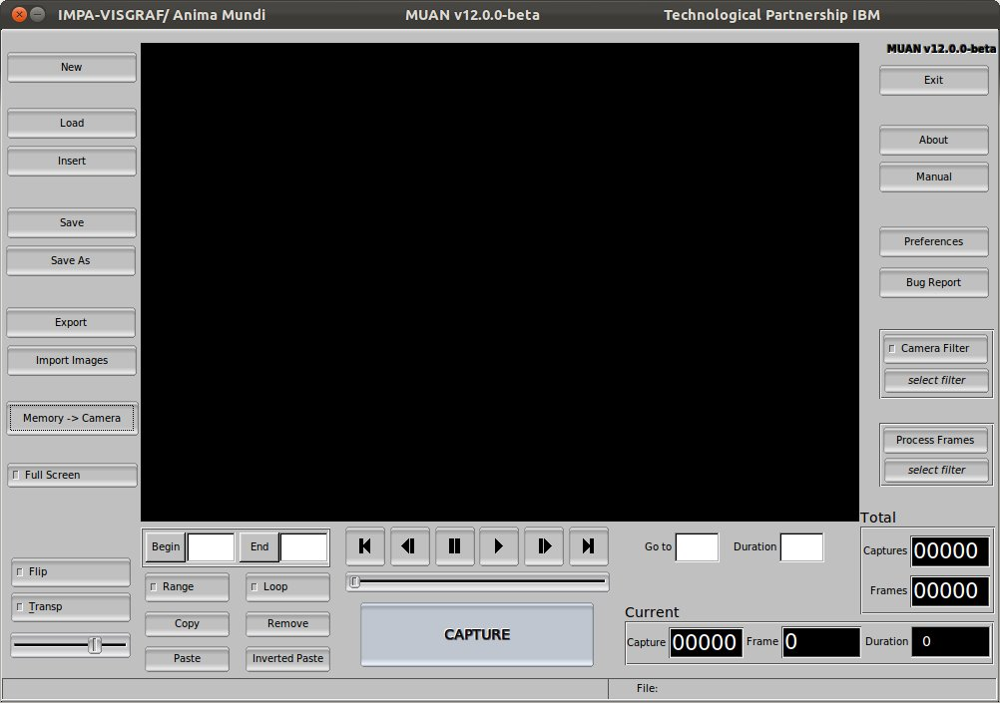
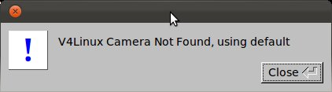
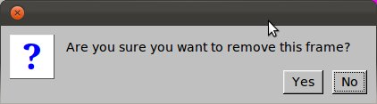
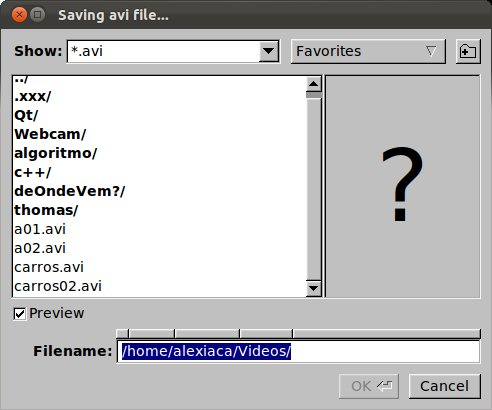
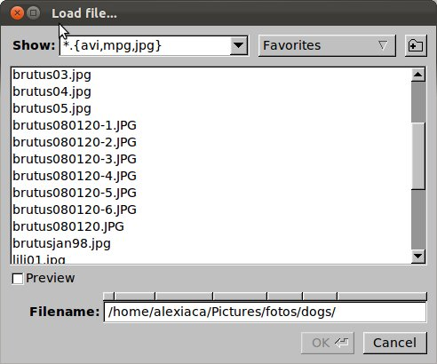
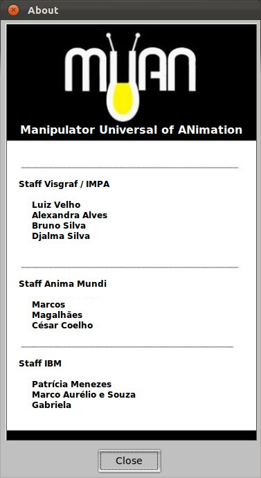
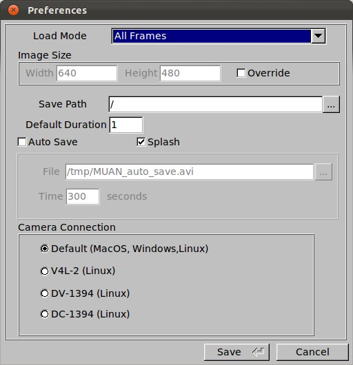
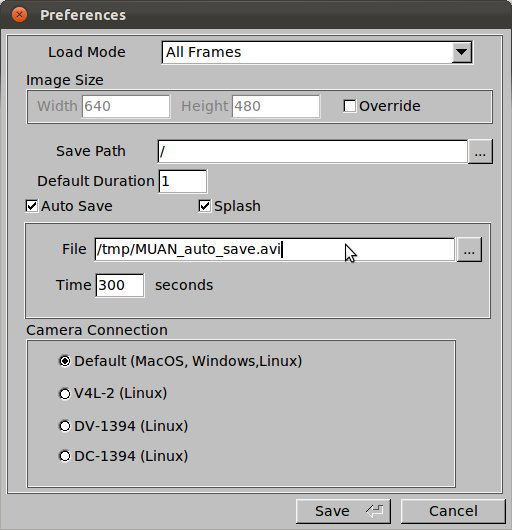
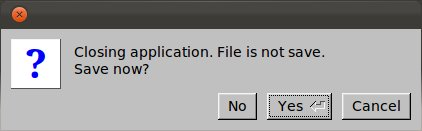

User Manual
|
|
|
User Manual |
MUAN is a support tool for the creation of frame-by-frame animation. Using a camera, it receives digital images, with which animations can be created. The basic principle for the creation of an animation with MUAN begins with the capturing of an image by the user. The image that will be captured is shown on the image panel. After capturing a certain number of images, the user can reproduce his animation, as well as edit it. Finally, the animation can be saved in an AVI format and loaded whenever the user wants.
Click on an element to find out how it works.

Main commands
MUAN's central panel, where the images are displayed. It works in two different modes:
Determines if the images displayed on the panel come from the camera or the animation itself (memory). In the "Memory" mode, it indicates that the images displayed on the image panel come from the animation. In the "Camera" mode, it indicates that the images displayed in the image panel come from the camera.
Shortcut: CTRL+/
Important: If the camera is not connected to the computer or is turned off, the application will display a message and enter (or continue in) the "Memory" mode.

Captures the next image received by the camera, inserting it in the animation, in the position following the current image.
Shortcut: \
In the Camera mode, defines the duration of the captured frame. For example, a 2 frame duration indicates that the next captured frame will last 2 frames when the animation is created.
In the Memory mode, defines the duration of the current frame (which is being displayed in the image panel). Just type in the duration you want and press ENTER.
Places the animation in the desired position and displays it on the image panel. The user must insert the number of the required captured image and press ENTER.
Important: In this case, if the program is on Camera mode, it will automatically switch to Memory mode.
Indicates the number (position) of the current image (capture).
Current Capture Duration Text Output
Indicates the duration of the current frame.
Indicates the number of the current frame. This number is calculated in relation to the duration of the previous captures.
Tip: If the main panel is in the "Memory" mode, the current frame will be displayed in the image panel.
Indicates the total number of images captured for the animation.
Indicates the total number of frames in the animation.
This number is calculated is relation to the duration of all captures.
Indicates the name and the path of the current file (where it is saved).
Tip:When the name of the file is in red, this means that the last modifications in the animation have not been saved.
Positions the current frame on the first frame of the animation.
Shortcut: HOME
Important: This operation switches the application to "Memory" mode, if it is not already in that mode.
Returns the position of the current frame in 1 position.
Shortcut: <
Important: This operation switches the application to "Memory" mode, if it is not already in that mode.
Freezes (stops) the execution of the animation.
Shortcut: PAUSE
Important: For this fact to be observed, the "Memory" selection must be activated in the "Memory/Camera" Selection and the animation must be playing. If this is not the case, clicking this button is useless, so nothing happens.
Executes the animation.
Shortcut: CTRL+ENTER
Important: This operation switches the application to "Memory" mode, if it is not already in that mode.
Adds the position of the current frame by 1 position.
Shortcut: >
Important: This operation switches the application to "Memory" mode, if it is not already in that mode.
Positions the current frame on the last frame of the animation.
Shortcut: END
Important: This operation switches the application to "Memory" mode, if it is not already in that mode.
Activates the option of playing just a section of the animation. The beginning and the end of the section must be specified in the Beginning and End boxes, respectively.
Shortcut: CTRL+R
Determines the position where the animation begins to play. If the box is blank, the animation will be played from the first frame.
Tip: In the "Memory" mode, use the Beginning Button to define the beginning of the section as the current frame.
Determines the final position of an animation being played. If the box is blank, the animation will be played to the last frame.
Tip: In the "Memory" mode, use the End Button to define the end of the section as the current frame.
Activates/deactivates the option of playing the animation continuously. When activated, it continuously plays the animation from the beginning, as soon as it reaches the end.
Shortcut: CTRL+L
Copies an image or a section when selected into the memory.

Pastes an image or section that is stored in memory.

Pastes a section backwards.

Activates/deactivates the "Flip" operation, which alternates the display of the last image of the animation and the image that is being received by the camera. It is possible to control the speed of the flip through the slider.
Shortcut: CTRL+F
Important: If the program is playing an animation, it automatically stops when flip is activated.
Activates/deactivates the Transparency operation, which applies a transparency and superimposes the last image of the animation with the image that is being received by the camera. It is possible to control the percentage of transparency through the slider.
Important: If the program is playing an animation, it automatically stops when transparency is activated.
Controls the percentage of transparency.
Makes the application go into full screen, i.e., the screen of the monitor is completely filled with only the Image Panel. To return to the normal screen, use the ESC key.
Shortcut: ALT+ENTER
In "Memory" mode, removes the current frame, if the operation is confirmed. An animation always needs at least one frame. Therefore, when the last frame is removed, the First Frame is automatically inserted into the animation, becoming the current frame.
Shortcut: DELETE
|  |
Important: In the confirmation box, even if another button is in focus, the ENTER key confirms the operation and the ESC key cancels the operation. The button in focus can be activated, through the keyboard, using the spacebar key. |
Saves the current animation in AVI format.
Shortcut: CTRL+S
|  |
Important: MUAN saves the information related to the duration of the frames in the AVI file. Therefore, this information can be used when loading the file. For further details, consult the "Preferences - Load Mode" section. |
Saves the current animation in AVI format.
Shortcut: SHIFT+CTRL+S
|
Important: MUAN saves the information related to the duration of the frames in the AVI file. Therefore, this information can be used when loading the file. For further details, consult the "Preferences - Load Mode" section. |
Opens a form in the browser, in which the user can describe problems in the use of MUAN.
Applies filters in the image captured by the camera in real time.
Allows user to select the filter that will be applied in the image captured by the camera in real time.
Applies filters to frames that are stored in memory.
Allows user to select filter that will be applied on frames stored in memory.
Creates a new blank animation, closing any other animation that is being used.
Shortcut: CTRL+N
Tip: : Before closing your current animation, the program suggests the Save operation, if the file is not saved.
Loads an animation previously saved or a RAS image.
Shortcut: CTRL+G
|  |
Important: Closes the current file in order to open the new one.
Inserts the previously saved file (animation or RAS image) into the current animation..
Shortcut: CTRL+I
Important: The animation or image will be inserted in the position of the current frame.
Exports the current animation to a new format. Available formats:
Shortcut: CTRL+E
Important: In the export box, fill in the name of the file with the desired extension (format). For example: test.mpg, so that the file is saved into mpeg1 format.
Inserts all jpeg files from a directory into the current animation, following the alphabetical order of the file names.
Shortcut: CTRL+M
Displays the About box, containing information about the development of MUAN.

Displays the user manual.
Displays the preferences box, where the parameters of the system are configured.
|  |  |
Leaves the system. If the current animation has not been saved, this option will be presented at this point.
Shortcut: ESC
|  |
No:
Leaves the application without saving |
| Concept and Application |
System Development |
Technological Partnership |